Iconic Sites of Lebanon
Ancient & Historical Sites
Baalbek
This is one of the most impressive Roman temple complexes in the world. The massive columns of the Temple of Jupiter are jaw-dropping.
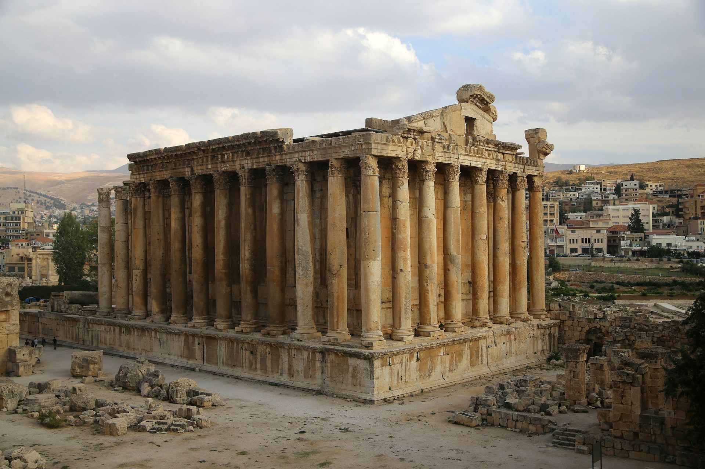
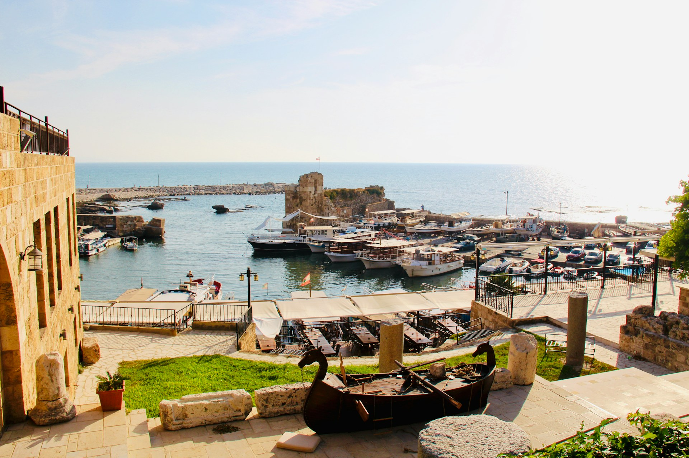
Byblos (Jbeil)
Considered one of the oldest continuously inhabited cities in the world, it has a charming old souk, Crusader castle, and ancient port.
Tyre (Sour)
Famous for Roman ruins, a spectacular seaside promenade, and archaeological sites including a Roman hippodrome.
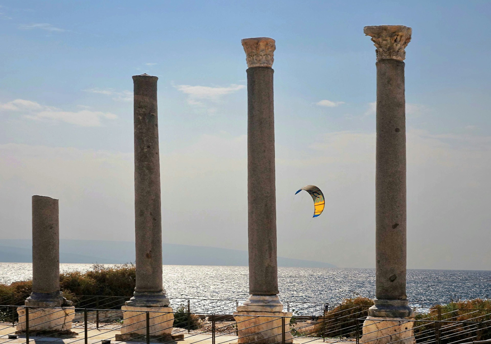
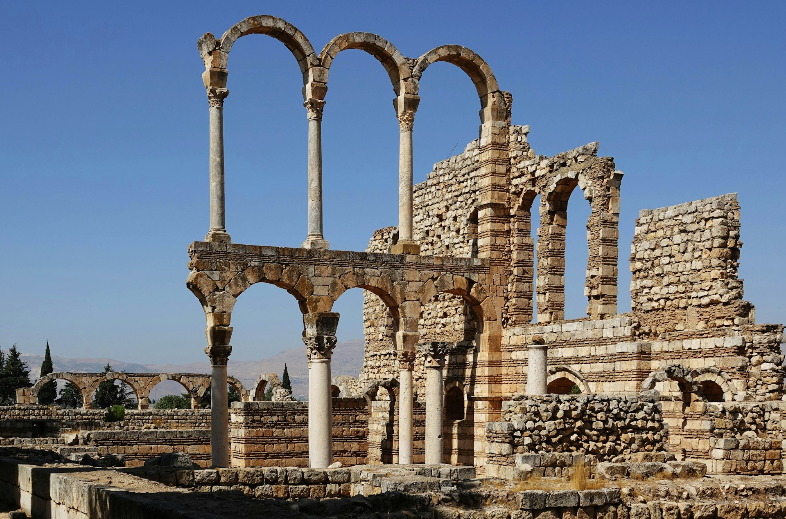
Anjar
An Umayyad city with ruins that are a unique glimpse into early Islamic urban planning.
Religious & Cultural Landmarks
Jeita Grotto
The Jeita Grotto is a system of two separate, but interconnected, karstic limestone caves spanning an overall length of nearly 9 kilometres (5.6 mi).
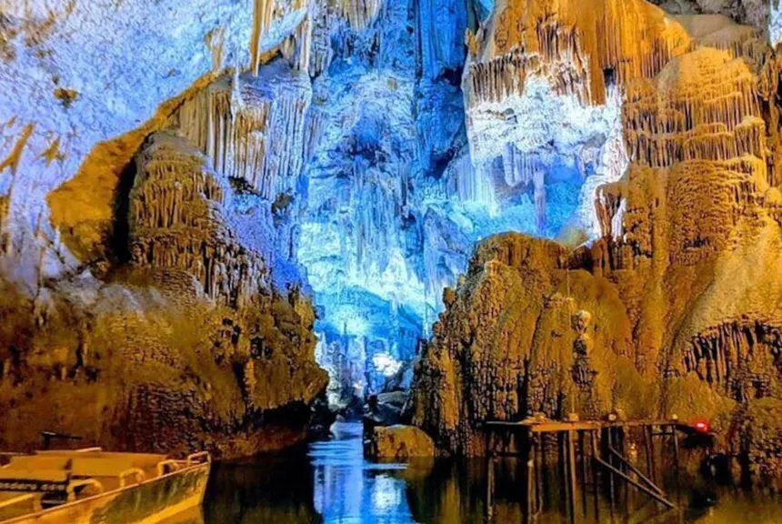
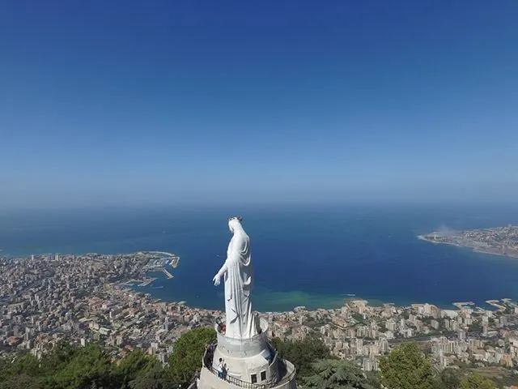
Our Lady of Lebanon (Harissa)
A massive statue of the Virgin Mary overlooking the bay of Jounieh, accessible by cable car with panoramic views.
Kreim Monastery / Qadisha Valley
Nestled in dramatic cliffs, this valley has monasteries and hermit caves that are centuries old.
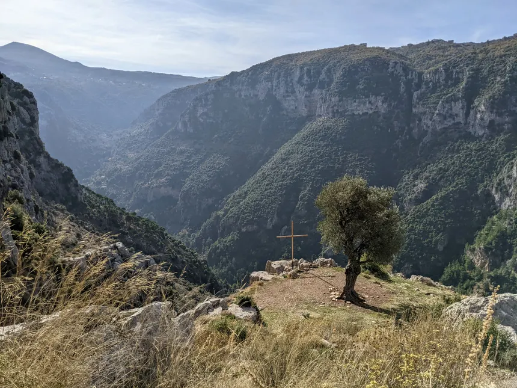
Urban & Modern Highlights
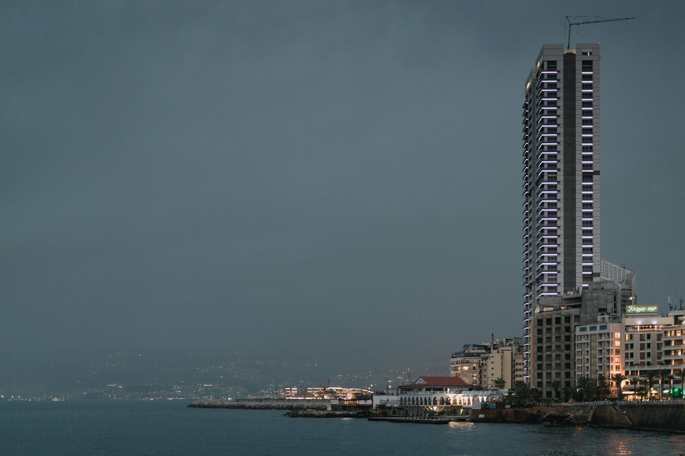
Downtown Beirut
Rebuilt after the civil war, it mixes Roman ruins, Ottoman architecture, and modern skyscrapers.
Corniche Beirut
The seaside promenade is iconic for walking, jogging, and watching the Mediterranean sunset.
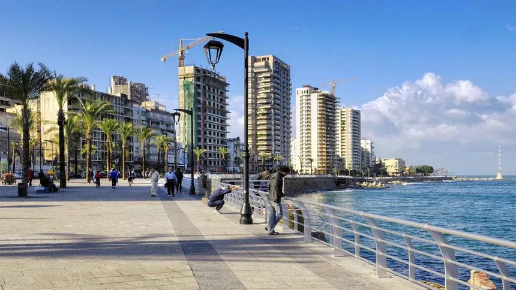
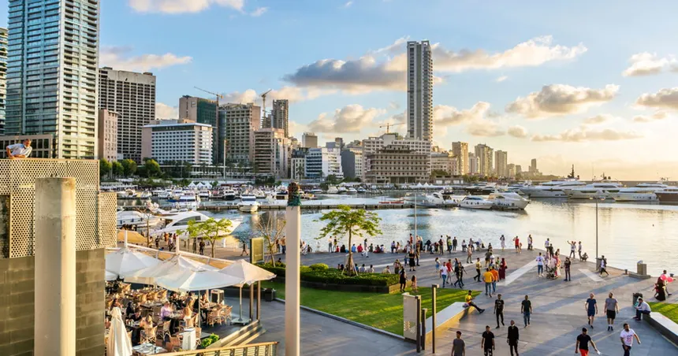
Zaitunay Bay
Modern marina with restaurants, yachts, and nightlife
Natural Landmarks
Cedars of God (Bsharri)
Ancient cedar forests that are a symbol of Lebanon, some dating back thousands of years.
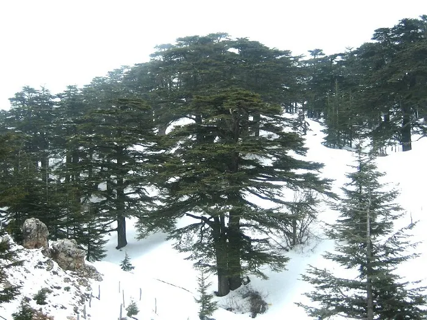
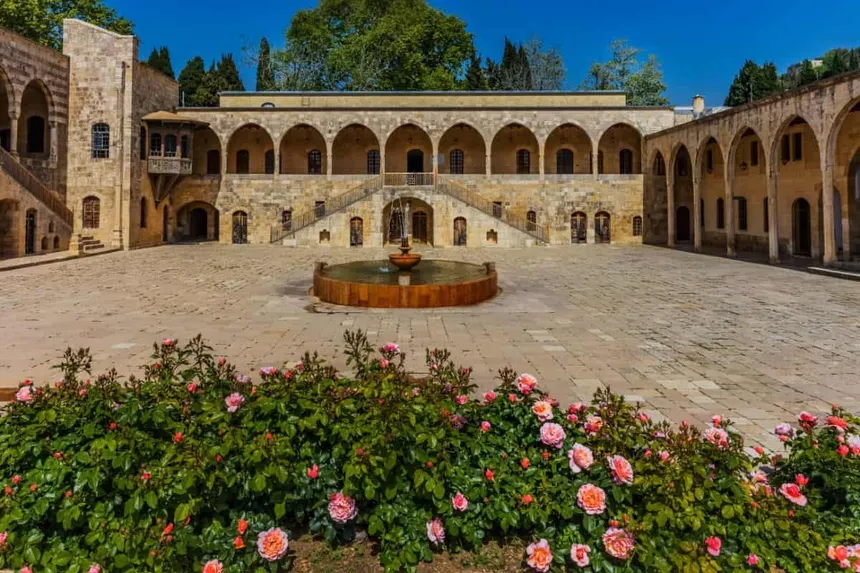
Beiteddine Palace
Beiteddine Palace is a restored 19th-century Ottoman palace located in the Chouf Mountains, approximately 40–50 km southeast of Beirut, known for its sumptuous interiors, extensive gardens, and significant archaeological collections.